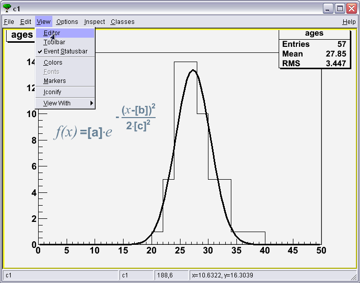
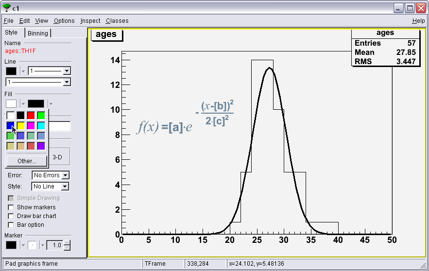
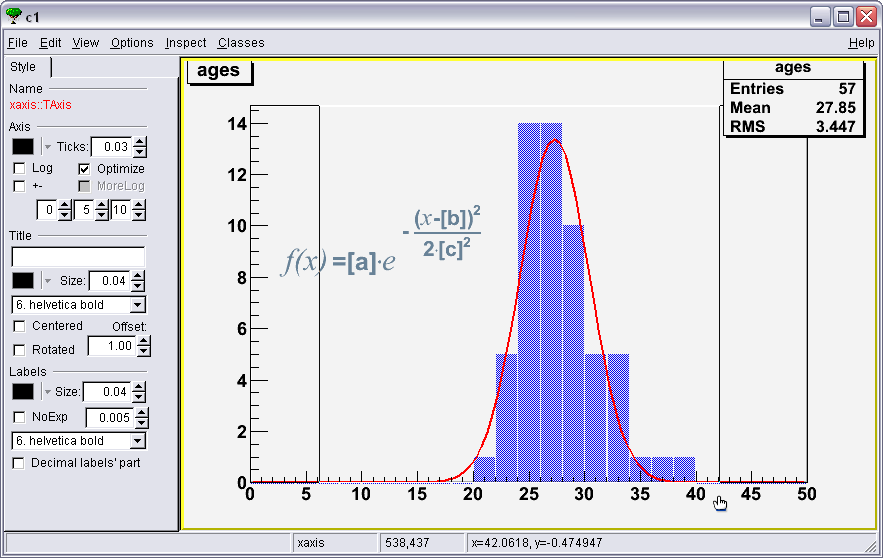

ROOT Exercise I
Drawing and Editing Histograms (1/3)
Execute ages.C. It creates and displays a histogram showing the age distribution of the participants of a CSC. Use the editor (in the TCanvas's menu under View > Editor) to make the histogram look like this one:

You run the code by starting ROOT (run root at the shell) and the executing .x ages.C
To modify the histogram you need to open the editor, via the editor menu entry from the view canvas menu.

Then you can edit any object in the pad by just clicking on it.
- Once the Editor is open (as shown in the previous help, click on one edge of the histogram
to switch the editor.

- Then you can change the fill color.
 - Then change the fill style.

- Then the "bar" options.

- Select a bar width of 0.90 (means 90%)

- And a bar offset of 0.05 (to center the bars between the bin limits)

- Same for the line properties of the fit (select fit object by clicking on the line).


- Now you can zoom the X axis to obtain (more or less) the same limits than the ones on the example.
 - At last, to diplay fit information, click on the box containing histogram infos (Entries, Mean and RMS)
and check "values" in "Fit Options field".

 Help
Help